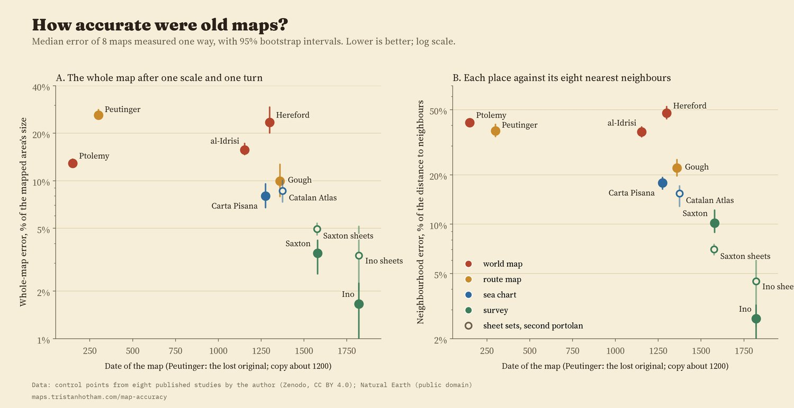
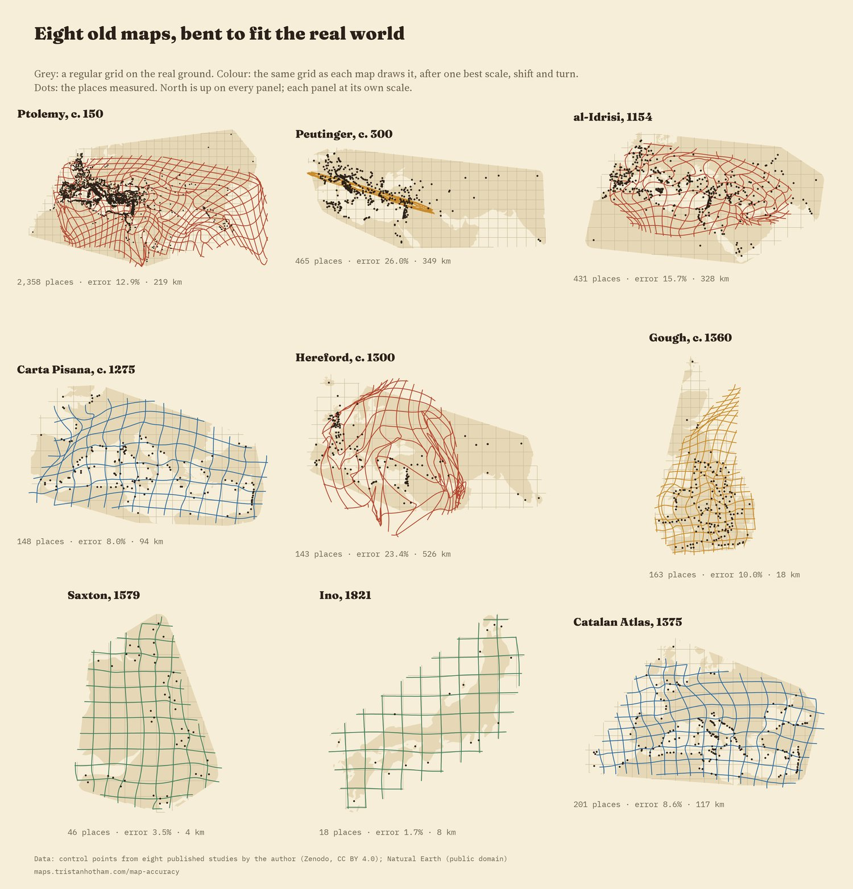
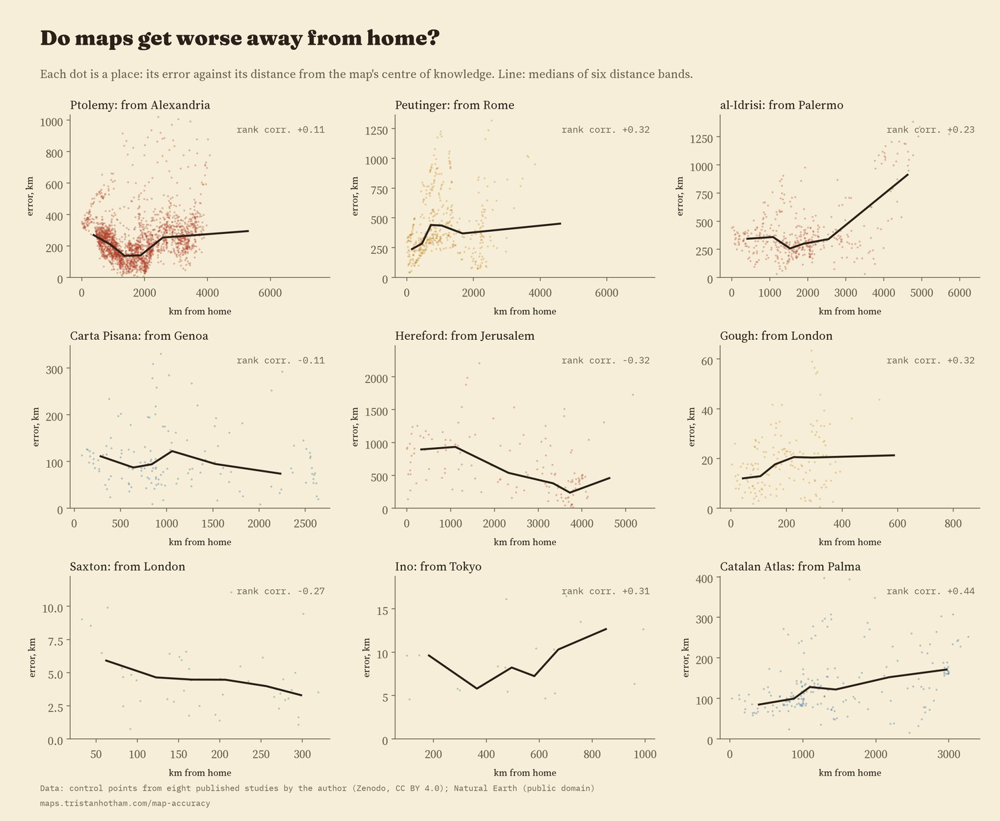
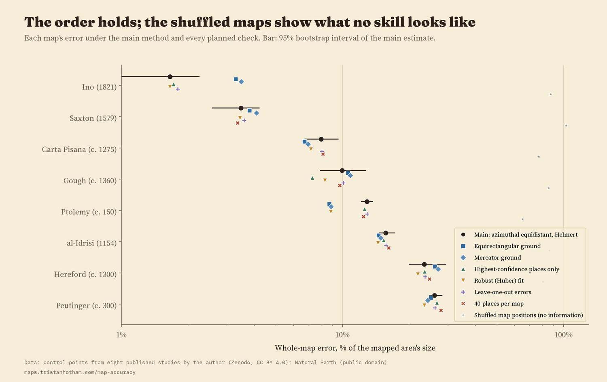
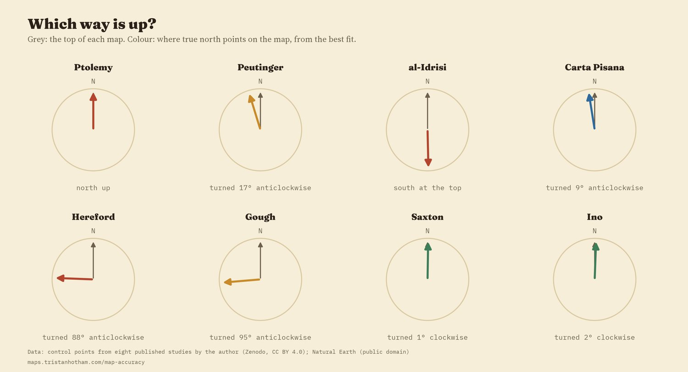

Eight maps from about AD 150 to 1821, each fitted to the real world with one scale, one shift and one turn. The coloured grid is a regular grid on the ground as the old map draws it. Pick a map below, drag the slider to bend the world into its shape, tap a place.
How accurate were old maps? It sounds like a simple question, and every study of a single map answers it with a number: so many kilometres out, on average. But those numbers cannot be compared. Each study picks its own places, its own way of fitting the old map to the new, and its own yardstick, and a map of Britain will always be out by fewer kilometres than a map of the known world. So I took eight maps I have measured before, from Ptolemy's Geography of about AD 150 to Ino Tadataka's survey of Japan finished in 1821, and measured them all again the same way: the same fit, the same projection, the same error measure, with the uncertainty attached.
Fit each map to the real world with the best single scale, shift and turn, and the typical place is out by 4.4 km on Saxton's map of England and Wales (1579), 18 km on the Gough Map of Britain, 94 km on the Carta Pisana and 526 km on the Hereford map. Much of that difference is size: a map of the known world is spread over thousands of kilometres. So the yardstick here is the error as a share of the size of the area mapped (the typical distance of its places from their centre). On that measure the eight maps run from 1.7% to 26.0%.
Median error with its 95% interval. Lower is better. Log scale. Tap a dot to open that map above.
| Map | Date | Places | Median km | Share of size | Against neighbours |
|---|
It is tempting to read the chart as progress: big errors in antiquity, small ones by the age of survey. The data say something narrower. Across all eight maps, later maps are more accurate on average (a rank correlation of -0.71), but that rests on the two surveys, Saxton's and Ino's, which are both the latest and the best. Among the six maps made before 1500 there is no clear trend (a correlation of -0.31), and with the real world drawn on a different projection the overall trend is no longer clear either. The trend with date holds in 5 of the 8 checks planned in advance, so it is not robust: accuracy, measured this way, is not progress. A Pisan or Genoese sea chart of about 1275 has 2.9 times less error, as a share of size, than the Hereford map made a generation later, and Ptolemy's coordinates from the second century beat two world maps made a thousand years after him.
What lines the maps up better is what they were for. The surveys, measured on the ground, sit at 2.6% (median of the two); the sea chart at 8.0%; the route maps at 18.0%; the world maps at 15.7%. The Hereford map is a picture of history and the world centred on Jerusalem, and the Peutinger Table is a road map rolled into a strip about 20 times longer than it is high. That they fit the modern ground badly is not a failure of the people who made them.

Left: error as a share of the area's size. Right: each place against its eight nearest neighbours.
The grids above show where each map goes wrong. The Peutinger Table's grid collapses into a ribbon. Ptolemy's is regular around the Mediterranean and folded at the edges. Al-Idrisi's world is squashed north to south. The Hereford map's grid folds over itself, with the Holy Land swollen and the edges of the world pulled round the circular frame. The Carta Pisana is regular in the Mediterranean and bent in the Atlantic, and the Gough Map is good in England and pulled out of shape in Scotland. Saxton's and Ino's grids are nearly square.

Each grid is drawn from the errors of the places measured, so it is only reliable near them.
The errors come in regional blocks, not at random: on 7 of the eight maps, a place's error is much like its neighbours'. On balance maps also get worse away from home, by about 35% for each step of the map's own size from its centre of knowledge, but not everywhere. On the Hereford map it is the other way round: places near Jerusalem are out by a median 906 km and places far away by 403 km, because the Holy Land is drawn several times too big.

Error against distance from each map's centre of knowledge.
I wrote down the method and the checks before running anything. Changing the projection of the real world, fitting robustly, leaving out the doubtful places, testing each place without itself, taking 40 places per map, or leaving out each region in turn hardly changes the order of the eight maps. It does change the levels, especially for the world maps and sea charts, whose errors fall by up to 38% on a projection with straight lines of latitude and longitude. When I shuffled each map's places at random, to see what a map with no information looks like, the errors were 65% to 103% of the area's size, at least 2.8 times the real ones. Every one of these maps knows a great deal about where things are.

Every planned check, and the shuffled maps.

Which way is up: the turn of each map from the best fit.
The places. Every place is one I identified and read for an earlier study of each map: 3,772 on the eight maps, 4,864 with the second portolan chart (the Catalan Atlas, 1375) and the sheet sets of Saxton's county maps and Ino's large-scale survey. Nothing was re-read for this comparison. Ino's whole-country frame is the general map of Japan compiled from his survey in 1878, because his own sheets survive in this collection only for the far north.
The method. Each map is fitted to the real positions with a single scale, shift and turn (a Helmert transformation), on an azimuthal equidistant projection centred on its places, and each error is the distance on the globe from where the map puts a place to where it really is. The share of size divides the median error by the root mean square distance of the places from their centre. The neighbourhood measure fits each place's eight nearest neighbours and asks how well they predict it. Intervals come from 2,000 resamples. The grids are drawn the way MapAnalyst draws them, from a smooth surface through the errors.
What this cannot say. These numbers measure how far a set of identifiable places, on a particular copy or reconstruction, sits from the modern ground. They do not measure whether a map did its job, and they include the errors of copies (al-Idrisi is measured on Konrad Miller's 1928 reconstruction, Hereford and Peutinger on his facsimiles), of the places I could identify, and of the projection chosen. Eight maps are too few to separate date from purpose.